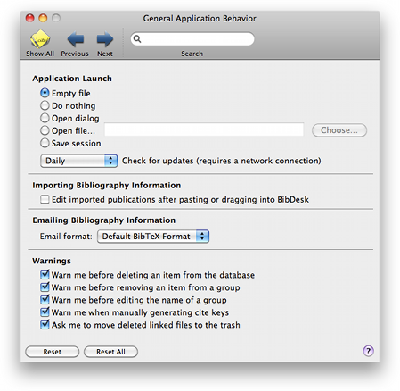

General General
General GeneralThis preference pane lets you control what BibDesk does when starting up. You can also control the overall appearance of the main window.

Application Launch: This controls what BibDesk does when it starts up. Clicking the "Open this bibliography" radio button prompts you to choose a default bib file to open.
Check for updates: Select how often BibDesk checks for updates automatically at startup.
Importing Bibliography Information: This option lets you decide whether to always immediately open the edit window for an item you have pasted or dragged in. See Getting More Help for information on the Error panel.
Emailing Bibliography Information: This preference lets you choose the format that is used to generate an emailed representation. You can either choose the default format, which is a cleaned BibTeX string, or a custom text template.
Warnings: These options allow you to activate or deactivate warnings before deleting items, removing items from a group, renaming groups, generating cite keys, or whether to move removed linked files to the trash. These warnings can also be deactivated from the warning dialog.